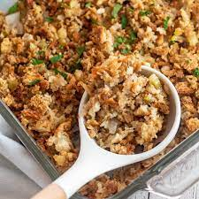

Stuffing

Description
This awesome stuffing recipe is fast, easy, and adds a unique twist with Herbes de Provence that your dinner guests will Love!
More info for this recipe can be found at https://bakeitwithlove.com/easy-stuffing/
Ingredients
- ½ cup Butter - Butter creates a rich, delicious taste that browns the top and makes everything rich and amazing.
- 2 ribs Celery - Adds a depth of flavor and some texture to many different dishes!
- 1 large Yellow Onion - While other onions can be used in a pinch, the yellow variety has a great flavor that sweetens as
you cook it.
- 1 tablespoon minced Garlic - Fresh or jarred will work.
- 1 tablespoon Herbes de Provence - This is a blend of herbs commonly found in the Provence region in southeastern France.
- Salt & Pepper (to taste) - As always, add as much or a little of these as you'd like!
- 17 ounces Stuffing Cubes - Pick your favorite brand of these little bread squares.
- 2 cups Chicken Broth - This is another ingredient you can either buy at the store or make from the leftover bones of a
rotisserie or bird from another recipe.
Instructions
- Preheat your oven. Set your oven to 350℉ (175℃).
- Melt the butter. Heat ½ cup butter in a large pot over medium heat.
- Then, add veggies and seasoning. Toss 2 ribs of diced celery, 1 large diced yellow onion, and 1 tablespoon minced garlic
in the butter. Saute for 3 to 4 minutes. They should be soft. Add 1 tablespoon herbes de provence along with some salt
and pepper (to taste). Stir until blended.
- Combine with stuffing cubes. Take the pan off the heat and drop in 17 ounces stuffing cubes. Mix together until the
butter coats everything.
- Heat the broth. Now it's time to pull out a saucepan and bring 2 cups chicken broth to a low boil. You can also do this
in a microwave-safe measuring cup in the microwave. Then pour it over the stuffing mix and combine thoroughly.
- Bake. Move the stuffing from the bowl to a greased 9x13” baking dish and cook for 25 to 30 minutes.
- Cool and serve. Remove your stuffing from the oven and let it cool slightly before serving.